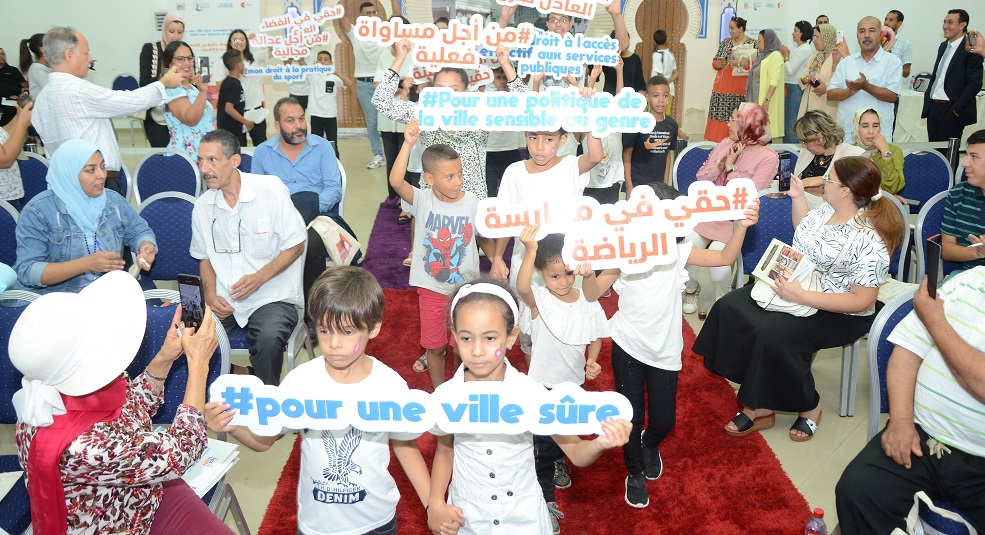

PROGRAMME FES AU FEMININ
pour des espaces publics égalitaires, sûrs, participatifs, accessibles, écologiques, et solidaires.
L'égalité du droit à la ville fait référence au principe selon lequel tous les habitants et habitantes d'une ville ont les mêmes droits et les mêmes opportunités en termes d'accès aux ressources et aux services urbains. Cela signifie que tous les individus, indépendamment de leur origine sociale, de leur sexe, de leur âge, de leur situation de santé, de leur quartier de résidence, … doivent pouvoir se déplacer en sécurité dans les espaces de la ville pour aller à l’école, chercher de l’emploi, accéder à la justice, participer à des évènements publics, et jouir des avantages offerts par la ville.
En matière de droits des femmes, les enjeux sont multiples. Les femmes sont souvent confrontées à des obstacles pour accéder aux espaces publics de la ville, pour se déplacer librement et en sécurité, pour trouver un emploi décent, pour avoir accès à des logements sûrs et abordables, pour accéder aux services de santé et à l'éducation, ainsi que pour participer aux processus de prise de décision locaux.
L’analyse des témoignages des femmes reçus par le « centre multifonctionnel Batha » (espace de prise en charge de femmes victimes de violence géré par IPDF) révèle des difficultés d’accès des habitantes de quartiers précaires aux services essentiels exacerbées par la pauvreté, la faible scolarisation, l’éloignement des lieux des services, l’information indisponible/ou inadaptée, la faible mobilité, et le sentiment d’insécurité dans l’espace public, notamment dans les trajets qui mènent aux arrêts de bus, ou aux services.
L’analyse des parcours de 954 usagères du centre Batha, réalisé par l’association IPDF, illustre le lien entre la zone d’habitation des usagères et leur capacité à aller au bout de leurs démarches juridiques ou d’insertion économique. A titre d’exemple, seulement 12% des habitantes du quartier sahrij gnaoua ont réussi à aller au jusqu'au bout des procédures juridiques qu'lles ont entamées, alors que la moyenne dans les 15 quartiers analysés était de 46%. Ces constats ont été confirmés lors des focus groupes et des balades exploratoires réalisées avec les usagères du quartier.
Le programme « FES AU FEMININ », mis en œuvre par l’association IPDF, nous permettra de renforcer le rôle des femmes dans la construction urbaine, de promouvoir leur participation économique, de faciliter l'accès aux services pour les victimes de violences et de prévenir le harcèlement. Il est articulé autour de 4 projets complémentaires :
- Lutte contre le harcèlement et les violences dans les éspaces publics: Suite au plaidoyer actif de la dynamique associative coordonnée par l’association IPDF, la commune de Fès a déposé une lettre d’intention auprès de la directrice exécutive de l’ONU Femmes. Et ce, afin de rejoindre « l’initiative mondiale des villes sûres et des espaces publics sûrs pour les femmes et les filles », et d’être accompagné dans ce sens pour la mise en œuvre de l’égalité de genre au sein du territoire. Cet effort permettra de soutenir Les décideurs des politiques territoriales, et les actrices-teurs de la société civile, dans leurs efforts de prévention du harcèlement sexuel et des différents types de violence dont les femmes et les filles sont victimes dans les espaces publics (rues, parcs, marchés, transports en commun, etc.). Ces violences impactent négativement la santé et le bien-être des femmes et des filles, et constituent un frein important à leur accès aux services essentiels, aux opportunités culturelles, aux loisirs, etc.
Un séminaire a été organisé le 14, 15 et 16 Septembre par IPDF, la commune de Fès, et l’ONU Femmes et a permis le lancement effective de ce programme. - Renforcement du rôle des femmes dans la construction et la gestion de l’environnement urbain: Le projet consiste à Contribuer à l'autonomisation/empowerment des jeunes femmes de 4 quartiers sensibles en leur fournissant des ressources et des outils pour développer leur rôle dans la communauté.
Grâce à l’accompagnement fournis par l’association, elles mettront en place des groupes d’entraide et de veille communautaires et réaliseront dans leurs quartiers des activités des sensibilisation, d’animation urbaines, et de diagnostic urbain participatif. - Promotion de la participation économique des femmes dans la ville de Fès: 80% des femmes marocaine sont dites inactives (HCP. 2020). Leur absence du marché de l’emploi s’explique en partie par les contraintes à leur mobilité, les violences de genre, le partage inégal des responsabilités familiales, l’absence de solutions pour la garde d’enfants…
Le projet met en œuvre des solutions pratiques aux freins à l’emploi des femmes, en proposant des interventions individualisées pour attenuer l’impact des freins à l’emploi (orientation juridique, appui psychologique, aide au transports, prise en charge des enfants…), des formations en soft skills, des formations professionnelles, et un accompagnement dans la recherche active de travail via « un club de recherche active d’emploi ».
Le projet prévoit également l’organisation annuel d’un « forum de l’emploi au féminin », qui met en relation les femmes formées dans le cadre du programme, et des entreprises locales en recherche de talents féminin. - Renforcement de l’accès des femmes victimes de violences et/ de discriminations aux services et aux ressources de base de la ville de Fès. Ce projet comprend deux composantes:
- Une composante interne, relative à la mise en œuvre au sein du « Centre Multifonctionnel Batha pour l’Autonomisation des Femmes », d’une chaine de services intégrée et systèmique pour l’autonomisation des femmes victimes de violences. Cette chaine est composée des services d’accueil, d’écoute active, d’accompagnement à la conception de projets de vie, d’orientation juridique, de suivi psychologique, d’hébergement temporaire, et d’appui à la parentalité. Les objectifs et les activités des interventions sont encadrées par les projets de vie réalisées par les usagères avec l’aide des intervenantes sociales.
- Une composante externe, relative à la mise en place, en partenariat avec les membres du collectif TITRIT (dynamique d'associations locales composée de 24 associations) d’une chaine de services inter acteurs. Les membres du collectif assureront, en impliquant les services publics de lutte contre la violence à l'égard des femmes, des interventions successives, complémentaires et cohérentes, qui prennent en considération l’ensemble des facteurs qui emprisonnent les femmes et leurs enfants dans les situations de violences et de pauvreté. (Des procédures opérationnelles de coordination seront élaborées conjointement).
Objectifs du programme
- Promouvoir l'accès des femmes à l'emploi formel dans la ville de Fès.
- Renforcer l’accès des femmes victimes de violences et/ou de discriminations aux services et aux ressources de base de la ville de Fès.
- Renforcer le sentiment de sécurité, et l'appropriation par les femmes et les filles des espaces publics de la ville de Fès.
- Renforcer le rôle des femmes dans la construction et la gestion de leur environnement urbain.
Soutenez le programme
Nous avons besoin de votre soutien pour continuer notre travail. Votre don nous aidera à poursuivre nos actions en faveur de l'égalité des genres et de l'autonomisation des femmes.